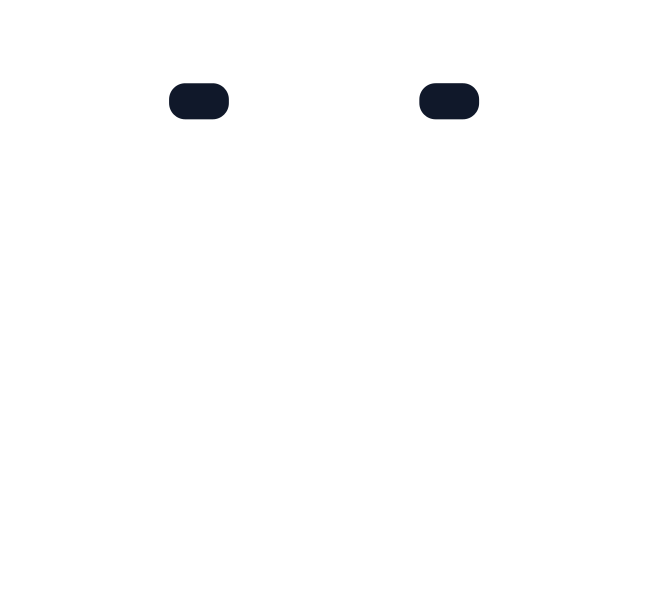
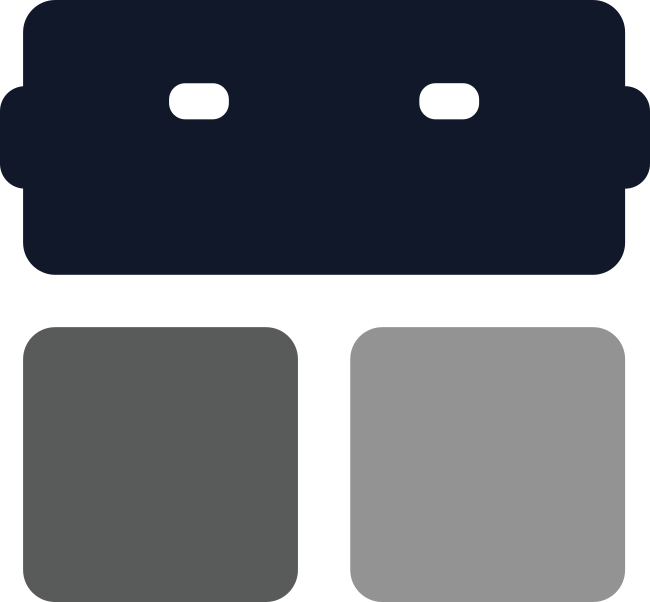

IN THE LOOP
One goblin.
Every conversation.
Your team has its places.
Goblin meets you there.
GOOD WORK STARTS WITH A CONVERSATION01 / 05

00:00/01:00

goblin A little coworker. A lot more connected.IN THE LOOP
Your team has its places.
Goblin meets you there.
